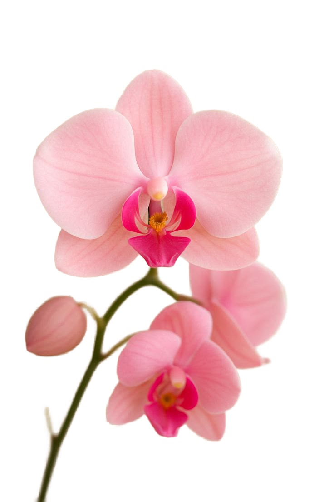
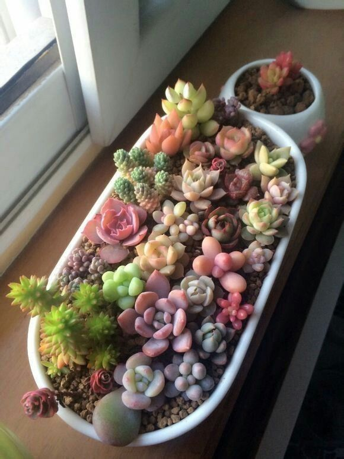
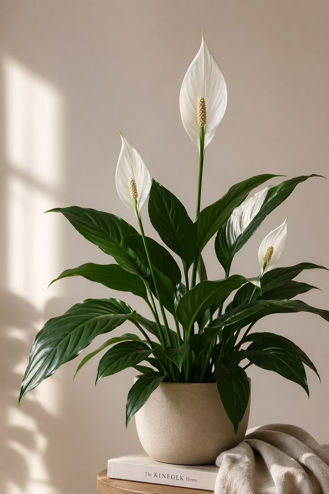

Комнатные растения

Орхидея «Фаленопсис Микс»
Цена: 1800 сом
Элегантное цветущее растение в прозрачном горшке. Долго радует крупными нежными цветами и отлично подходит для подарка.

Микс суккулентов в кашпо
Цена: 750 сом
Композиция из неприхотливых мини-эчеверий и седумов. Идеальный выбор для тех, кто часто забывает поливать цветы.

Спатифиллум «Уоллиса»
Цена: 1200 сом
Популярное домашнее растение, известное как «Женское счастье». Цветет белыми парусами и прекрасно очищает воздух.

Антуриум «Андре Ред»
Цена: 2100 сом
Экзотическое комнатное растение с глянцевыми восковыми цветами ярко-алого цвета. Любит рассеянный свет и тепло.